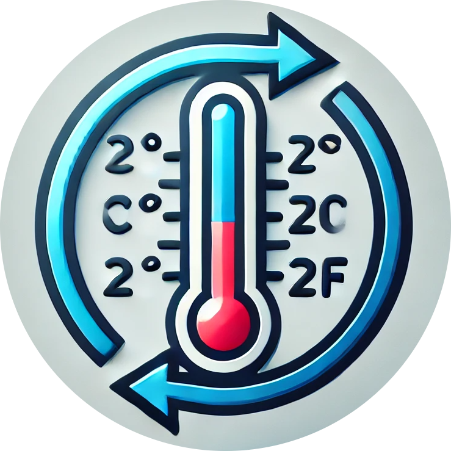

TEMPERATURE CONVERSION
Temperature Conversion:
Convert
(Click the 'Convert' button every time you want to convert.)
FROM:
Celsius (°C)
Fahrenheit (°F)
Kelvin (K)
Rankine (°R)
Réaumur (°Re)
TO:
to Celsius (°C)
to Fahrenheit (°F)
to Kelvin (K)
to Rankine (°R)
to Réaumur (°Re)
RESULT: